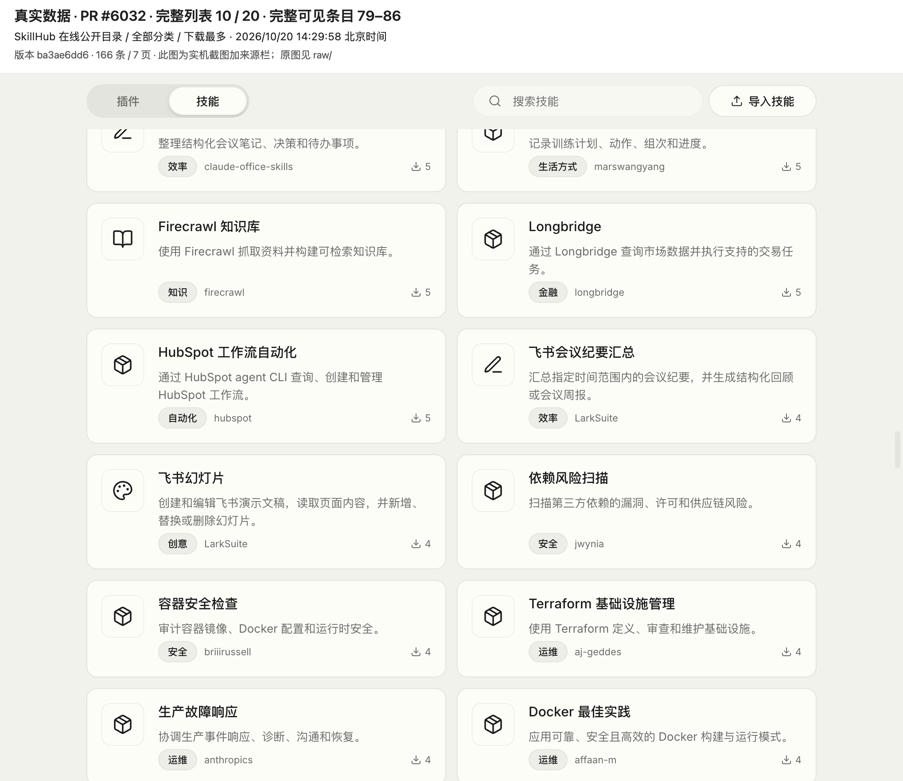
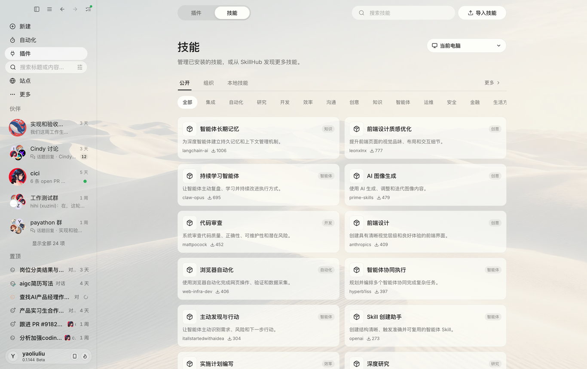

01 Overview
Cindy Cindy 是一款开源 AI 助手。我的工作覆盖能力扩展、跨端使用和交互方案：既关注用户能做什么，也关注从哪里发起、如何理解过程，以及怎样拿到结果。
02 The Problem
能力入口、交互方案与跨端链路，如何形成完整体验？ Agent 产品持续扩展能力，用户需要找到合适的工具、理解任务过程，并在不同端接续工作。插件、界面和交付链路需要一起设计与验证。
03 Workstreams
四组工作，从具体场景到产品方法。 从需求与场景出发，参与产品方案、交互原型、AI 辅助实现和真实流程验收。以下按工作类型组织代表案例。
插件产品 跨端协作 研究与原型 机制与方法 A 插件与 Skill 产品 从“模型能调用什么工具”出发，进一步明确用户任务、内容依据、权限和完整工作流。
播客洞察：从听到摘要，到回到原文 将转录、理解、问答与阅读连接起来，让结论可以追溯到具体节目、说话人与时间戳。
使用场景 用户需要理解节目中的细节、比较不同节目的观点，并在追问时找到原文依据。只有一段摘要，难以支持后续阅读与核对。
我的工作 研究同类产品与开源方案，拆解转录、摘要、内容问答、跨节目比较和原文追溯的能力范围；参与插件实现、安装验证、官方提案与多轮评审修订。
关键取舍 把阅读与章节追问继续建立在原文上；处理引用跳转、原文版本固定和跨块中文搜索。飞书妙记导入单独拆分，按只读权限梳理 OAuth、scope、token 刷新与数据流。
交付与状态 报告第 13 节确认：插件 PR #160 于 10 月 28 日合并；阅读、章节追问与导出 PR #330，以及引用与搜索修复 PR #331 于 11 月 13 日合并。真实卡片追问、资料库链路及飞书授权导入仍保留验收缺口。 Rhino Bridge：把设计软件接入聊天工作流 从平台与工具组织研究，推进到可安装的连接器预览。
我的工作 比较 McNeel 官方平台与社区 RhinoMCP 的工具组织、实例管理和版本路线；选择官方优先接入，并探索旧版兼容路径。
具体产物 形成 0.2.0 预览安装包，包含工具调用、视口截图回显及 Rhino 6／7 基础模式；记录中有 47 项自动化测试与打包校验。
交付边界 真实 Rhino 环境仍待验证；报告第 13 节将官方插件 PR #151 记为关闭未合并。因此这里呈现为预览与验证工作。 B 跨端交互与协作 围绕桌面、手机、群聊及不同账号之间的使用过程，梳理信息怎样展示、任务怎样接续，以及结果怎样送到用户手里。
附件交付：从“生成成功”走到接收端可用 把生成结果、消息附件、预览与下载视为一条完整链路。
问题场景 图片、PDF、长截图或内部媒体地址已生成，但群聊回复未带上附件，或收件方无法加载和下载。
我的工作 围绕多图、PDF 和混合内容组织跨账号、桌面与手机验收，核对回复是否带附件、接收界面能否显示、文件是否能下载打开，并推进相关修复与反馈。
交互取舍 在正文和附件之间明确各自职责：长截图保留顶部预览与完整查看，组件图片作为附件交付；将手机截图引用、视频插入和群组上传纳入完整使用场景。
交付与状态 报告个人 PR 清单记录了图片群附件交付 #6708、文件与 PDF 交付 #6773、长截图预览 #6943、移动端文本附件预览 #7400，以及组件图片交付 #7492 的合并。验证按当次实际账号和端侧范围保留。 引用与客户端状态：让切换和返回保持连续 围绕具体操作路径复现问题，再区分正常恢复与不应出现的旧状态。
引用草稿 参与保存引用对象、返回原群恢复的流程；继续处理发送期间切换群聊后旧引用再次恢复的问题。报告第 13 节确认 PR #10379 于 11 月 16 日合并；后续 P1 补丁的本地回归和类型检查，与真实 Desktop 验收分开记录。
界面细节 处理话题操作栏压住已读标记的问题，梳理群聊与私聊差异；排查插件卡片 iframe 文档未就绪导致的白屏，并补充生命周期保护。
验收范围 插件卡片覆盖首次加载、动态换稿、主题切换与按钮行为。报告确认 PR #9120、#9182 与画板遮挡修复 #10346 已合并；其他移动端文字选择、@ 提及等工作按各自分支与阶段说明。 真实问题 · 实际代码改动
实际改动：区分群聊与私聊话题的操作栏布局 PR #9182 · 已合并 ↗ · 74b22d8452
apps/desktop/src/renderer/features/bots/ThreadPanel.css
@@ -1,10 +1,16 @@
-/* Both reply runtimes use the same narrow-panel presentation. Controls stay in
- flow below the content, leaving the full message column available for reading. */
-.thread-panel {
+/* Private topics keep controls in flow below the content. Group topics retain
+ the main timeline toolbar and its side gutter, clear of the read receipt. */
+/* A group topic has reaction + more, rather than the main chat's four actions.
+ Keep that outer rail without sacrificing another 56px of narrow-panel text. */
+.thread-panel:not(.thread-panel-inline-actions) {
+ --chat-bubble-gutter: 64px;
+}
+
+.thread-panel-inline-actions {
--chat-bubble-gutter: 0px;
}
-.thread-panel .chat-bubble-toolbar {
+.thread-panel-inline-actions .chat-bubble-toolbar {
position: relative;
inset: auto;
margin: 8px 0 0 auto;下载本次读取的 PR diff 逐字保留 GitHub 实际 patch 片段。这是代码证据，不是客户端运行截图。
实际改动：随群草稿恢复引用，按发送对象清理 PR #10379 · 已合并 ↗ · 752edceac7
apps/desktop/src/renderer/features/bots/BotGroupChatView.tsx
classifyUnclassifiedDroppedItems,
getDroppedFileItems,
@@ -311,8 +311,25 @@ function BotGroupChatContent({ groupId, direct }: { groupId: string; direct: boo
const attachmentState = useAttachments(attachmentScope, attachmentScope);
const [dragOver, setDragOver] = useState(false);
const dragCounterRef = useRef(0);
+ const quoteDraftScope = useRef(captureDraftRecoveryScope(attachmentScope)).current;
/** 引用回复 waiting in this group's composer; the page is rebuilt per group. */
- const [quoteDraft, setQuoteDraft] = useState<BotGroupQuoteView | null>(null);
+ const [quoteDraft, setQuoteDraft] = useState<BotGroupQuoteView | null>(
+ () => quoteDraftScope.get()?.botGroupQuote ?? null,
+ );
+ useEffect(() => {
+ const existing = quoteDraftScope.get();
+ if (!existing && !quoteDraft) return;
+ quoteDraftScope.save({
+ ...existing, text: existing?.text ?? null, attachments: existing?.attachments ?? [],
+ botGroupQuote: quoteDraft ?? undefined,
+ });
+ }, [quoteDraftScope, quoteDraft]);
+ /** The quote went out with a message: clear only that quote, never one picked meanwhile. */
+ const acceptQuote = useCallback((sent: BotGroupQuoteView) => {
+ const existing = quoteDraftScope.get();
+ if (existing?.botGroupQuote === sent) quoteDraftScope.save({ ...existing, botGroupQuote: undefined });
+ setQuoteDraft(current => (current === sent ? null : current));
+ }, [quoteDraftScope]);
const [jumpTarget, setJumpTarget] = useState<string | null>(null);
const [highlightId, setHighlightId] = useState<string | null>(null);
/** Quoted originals on older pages not re-read since the last push: quotes use their snapshot. */
@@ -1564,6 +1581,7 @@ function BotGroupChatContent({ groupId, direct }: { groupId: string; direct: boo
dragOver={dragOver}下载本次读取的 PR diff 逐字保留 GitHub 实际 patch 片段。这是代码证据，不是客户端运行截图。
2026.11.23 核对两项 PR 均已合并。代码与合并状态不等于本次重新完成正式客户端的端到端验收。
1 2 真实群聊验收：排队、运行与查看过程 2026.11.10 真实账号隔离群验收，源码版本 6015fd92c9；测试伙伴通过客户端实际回复，不是夹具渲染。这里展示我参与的验收与证据记录；产品修复另属 #9485。 等待、运行与已完成在同一队列中可见 直接查看过程、确认工作中状态与停止入口 粉色编号框为后加说明，原始截图未改。 原始验收记录 ↗
更多交互改动 10 项 本轮另核对 10 项交互 PR 的实际生产代码，按 2026.11.23 的状态展示；代码保留原文，逐项区分是否合并。
手机输入与阅读 手机引用：草稿与已发引用统一 已合并 引用草稿改为带 × 的紧凑卡片；发出的引用移入气泡，在正文上方呈现。
PR #8009 ↗ 展开实际代码改动 apps/mobile/src/session/BotGroupChatScreen.tsx
79d548eab1
@@ -695,8 +696,13 @@ function BotGroupChatContent({ deviceId, deviceName, groupId, messageId, notific
</View>)}
</ScrollView> : null}
{!imageSelectionActive && replyTo ? <View style={styles.replyDraft}>
- <View style={styles.flex}><BotGroupQuote display={resolveBotGroupQuote(replyTo, group.messages)} onPress={() => locateMessage(replyTo.messageId)} /></View>
- <MainWindowActionButton density="compact" action={{ label: t('message.quote.remove'), onPress: () => setReplyTo(null), testID: 'botGroup.cancelReply' }} />
+ <View style={styles.replyDraftBody}><BotGroupQuote display={resolveBotGroupQuote(replyTo, group.messages)} onPress={() => locateMessage(replyTo.messageId)} /></View>
+ <Pressable accessibilityRole="button" accessibilityLabel={t('message.quote.remove')}
+ onPress={() => setReplyTo(null)} style={styles.replyDraftClose} testID="botGroup.cancelReply">
+ <View pointerEvents="none" style={styles.replyDraftCloseIcon}>
+ <X color={colors.textSecondary} size={iconSize.sm} strokeWidth={iconStroke.regular} />
+ </View>
+ </Pressable>
</View> : null}
<BotGroupTopicImageShare key={shareScope} selectionScope={shareScope} messages={selectedMessages} allIds={shareableIds}
resolveMedia={chat.media} onBusyChange={setImageShareBusy} />下载 PR diff @ 提及：强调名称，减少标签噪音 已合并 去掉名称底色，保留 medium 字重；局部选字复用已合并的共用组件，不将其重复计作新实现。
PR #7899 ↗ 展开实际代码改动 apps/mobile/src/session/BotGroupMessageText.tsx
9fe522b9e0
@@ -153,5 +153,6 @@ const makeStyles = (colors: ThemeColors) => StyleSheet.create({
paddingHorizontal: spacing.sm, paddingVertical: spacing.xs },
tableText: { color: colors.textPrimary, fontSize: typeScale.bodySmall, lineHeight: lineHeight.bodySmall },
tableHeaderText: { color: colors.textSecondary, fontWeight: fontWeight.medium },
- mention: { fontWeight: fontWeight.medium, backgroundColor: colors.surfaceChip },
+ // Match desktop's text-only mention highlight without a chip fill.
+ mention: { fontWeight: fontWeight.medium },
});下载 PR diff 相册入口：照片与视频同批选择 已合并 统一照片与视频入口，接入系统混选器，并处理选择后的上传、失败重试与迟到结果。原 PR 的手机图使用 mock 环境，未作为这里的真实业务截图。
PR #8086 ↗ 展开实际代码改动 apps/mobile/modules/cindy-photo-picker/ios/CindyPhotoPickerModule.swift
26d96bad10
@@ -50,7 +53,7 @@ public final class CindyPhotoPickerModule: Module {
return
}
var configuration = PHPickerConfiguration(photoLibrary: .shared())
- configuration.filter = .images
+ configuration.filter = includeVideos ? .any(of: [.images, .videos]) : .images
configuration.selection = .ordered
configuration.selectionLimit = max(1, limit)
configuration.preferredAssetRepresentationMode = .current下载 PR diff 过程与失败恢复 手机运行条：任务过程与停止可达 已合并 将伙伴工作区收成紧凑运行条，连接任务过程、耗时与群级停止；停止请求中保留运行态，避免提前显示完成。
PR #7806 ↗ 展开实际代码改动 apps/mobile/src/session/BotGroupSpeakerRow.tsx
71c97ef704
下载 PR diff 失败反馈：说清授权与附件未送达原因 已合并 在原群或话题说明授权撤销、暂时无法核验、附件下载或数量限制，并给出恢复建议；不因此重新运行模型。
PR #8443 ↗ 展开实际代码改动 apps/desktop/src/renderer/features/bots/BotGroupCapabilityNotice.tsx
fb6a2b0401
下载 PR diff 导航与内容呈现 侧栏识别：区分群聊与伙伴私聊 已合并 为群聊入口补充群组标识，处理单伙伴群与私聊混排时的辨认问题。
PR #8431 ↗ 展开实际代码改动 apps/desktop/src/renderer/features/bots/BotGroupSidebarRow.tsx
6ec201f196
@@ -217,6 +217,7 @@ export function BotGroupSidebarRow({
</span>
<span className="flex min-w-0 flex-1 flex-col gap-0.5">
<span className="flex min-w-0 items-center gap-1.5">
+ <Users size={12} className="shrink-0 text-[var(--sidebar-list-muted)]" aria-label={t('bots.groupChat.sidebar.title')} />
<span className="min-w-0 truncate text-14 leading-5" title={group.name}>{group.name}</span>
{group.archived && <span className={cn('shrink-0 text-11 leading-4', mutedClass)}>{t('bots.archived')}</span>}
</span>下载 PR diff 长图预览：先看清顶部，再打开全图 已合并 长截图在消息流里展示顶部局部预览，增加完整查看提示；点击和键盘入口继续打开原图。
PR #6943 ↗ 展开实际代码改动 apps/desktop/src/renderer/components/chat/ChatImageView.tsx
920673a273
@@ -122,6 +122,15 @@ export function ChatImageView({
// 同一个 state 槽位避免两种 lightbox 同时出现 (且统一受 scroll-lock 影响)。
const [lightboxOpen, setLightboxOpen] = useState<'image' | 'model' | null>(null);
const previewTriggerRef = useRef<HTMLImageElement>(null);
+ const longImageHintId = useId();
+ const [imageSize, setImageSize] = useState<{ src: string; width: number; height: number } | null>(null);
+ // #6796: crop only the thumbnail; gallery, lightbox and clipboard retain displaySrc.
+ // Key the measurement by the resolved URL so replacement/remote resolution cannot
+ // temporarily apply the previous image's dimensions to a different attachment.
+ const longImage =
+ variant === 'user-attached' && !modelFile &&
+ imageSize?.src === displaySrc && imageSize.width > 0 &&
+ imageSize.height / imageSize.width > 3;
const closePreview = () => {
setLightboxOpen(null);
previewTriggerRef.current?.focus({ preventScroll: true });下载 PR diff 插件卡片：文档就绪后再绑定动作 已合并 检查 iframe 根节点和 body 是否就绪，沿现有 onLoad 重试动作桥，修复卡片首次加载或换稿时的白屏。
PR #9120 ↗ 展开实际代码改动 apps/desktop/src/renderer/components/chat/GhostToolCard.tsx
68733584f9
@@ -485,7 +485,9 @@ function GhostCardCanvas({
// 监听器随文档重建,无需清理。
const attachClickBridge = useCallback(() => {
const doc = iframeRef.current?.contentDocument;
- if (!doc) return;
+ // Effects can run while srcDoc is replacing the document, before its root
+ // or body exists. The existing iframe onLoad retries the bridge once ready.
+ if (!doc?.documentElement || !doc.body) return;
// 与宿主的装饰动画闸门对齐一次:窗口可能在本卡挂载之前就已隐藏,那时闸门的遍历
// 还看不到这个 iframe。走闸门自己的入口,由它登记进共享的恢复集合 —— 自行 pause
// 而不登记的话,窗口切回来时统一恢复路径不会 play 它们,这张卡的动画会永久停住。下载 PR diff 全局预览：避免原生画板遮挡播放器 已合并 检测宿主预览遮罩的命中层，预览时隐藏原生浏览器视图，关闭后按当前页签状态恢复；画板内部预览不隐藏整个画板。
PR #10346 ↗ 展开实际代码改动 apps/desktop/src/renderer/features/right-sidebar/hooks/useNativePopupSurface.ts
6208a5f232
下载 PR diff 仍在推进 定时任务：收起时保留一个入口 开放 · 未合并 将重复运行历史收成单行，展开再看各次执行，继续保留异常与待回复提示。该 PR 仍开放，不写成已上线。
PR #11238 ↗ 展开实际代码改动 apps/desktop/src/renderer/features/cc-agent/lib/automationSidebarGrouping.ts
0c1269a824
下载 PR diff 另查到 #6465（插话／排队双按钮）与 #6459（模型／用量入口），均为关闭未合并，未计作已交付交互。账号检索的 54 条是 PR 记录数，不是 54 个已上线的交互功能。
C 产品研究与交互原型 通过真实界面研究、信息架构和可操作原型，把模糊反馈推进成可以讨论与评审的产品方案。
SkillHub：让技能更容易发现、理解和管理 从技能市场调研、卡片层级与状态设计，推进到前端和真实数据接入。
研究与定义 调研技能市场和主流工作软件界面，提出多种可评审方向，制作 HTML 交互原型。
具体设计 调整卡片宽高、头像、标题与副标题、标签、下载量和已安装状态；探索标签强调、按下载量或更新时间排序，并与 Cindy 原生插件页面保持一致。
产品取舍 视觉简化仍保留真实数据、安装状态、排序和分页能力。区分模拟原型与真实实现；本地 Skill 缺少分类映射依据时使用默认图标。
交付与状态 参与多轮原型、前端改动、接口和本地扫描接入，以及 PR #6032 的评审修订。报告第 13 节将该 PR 记为开放，后续自动跟进按要求暂停。 真实客户端 · PR #6032
1 2 3 在线目录：分类导航与卡片信息层级 历史客户端实拍 · 2026.10.20 · 源版本 ba3ae6dd6。已登录公开目录／全部分类／下载最多，保留原证据图来源栏。2026.11.23 核对 PR 仍开放，截图不代表已发布。 查看原尺寸截图 ↗ 无箭头的分类导航 标题下方显示描述 作者与下载量保持可查 粉色编号框为后加说明，原始截图未改。 展开查看真实目录中段 
1 2 目录中段：真实内容与长描述 同次历史采集的第 10/20 张。当次记录为 7 页、166 条可见条目，不作今日目录总量。 查看原尺寸截图 ↗ 长描述随内容换行 元信息保持独立 粉色编号框为后加说明，原始截图未改。 查看当前安装版的真实页面 
1 2 当前安装版 · 真实技能目录 2026.11.23 截取当前登录的 Cindy 0.1.144 Beta。此图说明今天客户端的实际呈现，不将它认定为仍开放的 #6032 已发布成果。 分类导航 真实卡片内容与元信息 查看 PR、原图与验证范围 ↗
伙伴任务追踪：把任务查找与接续变成可评审方案 围绕“怎样实时跟踪、找到并接续 Session”组织研究和设计推导。
研究过程 研究 GPT／Codex、Muse、Grok Bot 的任务管理方式，补充真实 Web 或手机界面、截图、任务模式、优缺点和直观结论。
我的工作 指出证据与表达缺口，要求沿用 Cindy 设计规范，并持续调整报告与原型，使研究能支持具体产品讨论。
具体产物 提出三种可评审方案，制作流程对比图和 HTML 原型，形成“问题背景 → 竞品证据 → 设计推导 → 三方案 → 落地与验收”的完整材料。
阶段说明 这里呈现研究与方案产出，功能实施范围和后续验收按具体任务记录。 AI 阅读助手：让原文细节始终可查 围绕 PDF 深度阅读，探索原文、摘要与中英对照之间的切换。
设计方向 针对需要掌握材料细节的用户，保留原文、中英对照、关键词与一句摘要导航，并探索杂志式排版。 范围与产物 优先支持 PDF，以《人类简史》为例制作 HTML 交互原型。摘要用于辅助阅读，原文细节保持可查；当前记录支持需求和交互探索。 D 产品机制与工作方法 Agent 机制与交接 绘制 Session 与 Harness 工作流程图，梳理消息、上下文、模型调用、工具循环、渲染与记忆写回。整理交接仓库、规则快照、聊天与项目归档；迁移和续聊的未完成项单独保留。
伙伴身份 稳定的 Profile 与 Home，承载长期身份。
提炼自所附 11 月 12—13 日研究；采用 11 月 13 日修订口径，伙伴记忆与当前项目目录分开理解。这是历史源码追踪材料，不是新实现的架构成果。
自动化与方法 建立 Slack 四频道早晚增量摘要及 PR 跟进等工作流，检查分页、通知和 HTML 归档；沉淀插件上架检查 Skill、验收文档、评审反例与短交接模板。
产品传播 参与 Cindy 品牌与万星宣传视频的脚本、分镜和素材组织。报告记录了 24 段分镜、48 张首尾帧、角色设定和配音，并合成 60 秒、1080p 视频；动画示意与真实功能证据分别标注。
原有案例内容依据工作报告第 2—8 节及第 13 节，快照截至 2026.11.17；新增交互 PR 的状态单列为 2026.11.23 核对。个人参与按需求、方案、推进和验收范围描述。
04 The System
把判断落实到真实流程验收。
图 01 · 交付链路 CINDY
01 需求 PRD、验收标准 02 原型 交互、状态 03 实现 插件、Skill、附件 04 评审 PR、线程 05 真实客户端 接收端能打开 06 复盘 原因与检查项
失败从第 5 步回到第 3 步：先定位原因，再把检查项补进流程。
先定义范围 开工时明确目标、保留能力、核心验收与补充风险；记录环境、目标版本和未覆盖项。
沿用户路径验证 针对附件走完“回复 → 接收 → 预览 → 下载／打开”；针对插件卡片检查首次加载、动态换稿、主题切换与按钮；针对引用测试返回和发送期间的切换。
回到最终行为复盘 以“原始需求 → 实现 → 最终行为”检查能力是否保留，记录回退与残余问题，再将有效检查项沉淀到文档与下一轮流程。 05 Outcomes
已交付的内容，与可追问的依据。 交付材料包括插件与阅读能力、交互原型、客户端修复、验收记录和方法文档。以下公开记录采用工作报告第 13 节的核验快照。
SkillHub 原型与前端 PR #6032 报告快照：开放，方案与前端工作已发生 下方 PR 总量沿用 2026.11.19 的作品集记录；案例状态来自 2026.11.17 报告，分别保留统计日期。Stars 与 Trending 为团队项目背景。
91 / 102 PR 合并 / 提交
10.3k GitHub Stars
#1 World Trending
查看完整工作报告（中文） ↗
06 Reflection & Scope
从一次性修复，形成可重复的产品判断。 先拆问题，再选交付方式 插件、个人 Skill、交互原型与客户端改动，各自解决不同范围的问题。先研究现有能力与用户场景，再决定最小交付。
视觉与交互需要保留真实状态 SkillHub 的排序和安装状态、群聊的重试与改派、附件的送达与下载，都需要明确实际行为与失败路径。
用证据说明完成到哪一步 原型、测试、评审、合并、发布和真实客户端可用分别记录。报告中的真实授权、部分设备与迁移验证缺口继续保留。
PR 统计沿用原稿截至 2026.11.19 的记录，未作今日更新。GitHub Stars 与 World Trending 为项目整体表现，不代表由我个人带来；部分插件仍处于预览或待合并阶段。